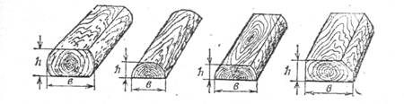
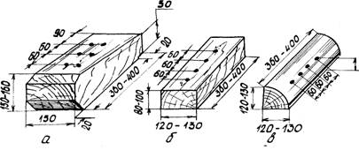
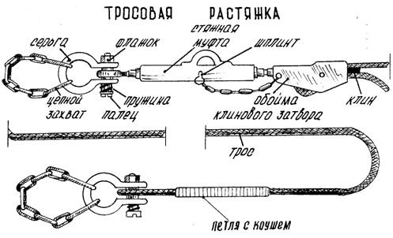
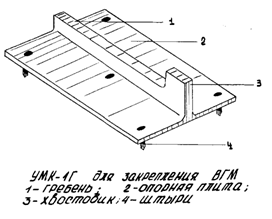
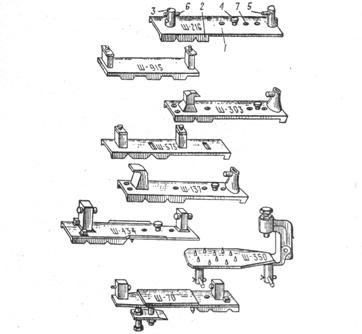
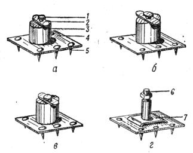
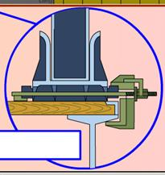

• Direg dörtgyraň agaç bölekleri • Köp gezek ulanylýan uniwersal berkidijiler
• Nusgalyk direg we gapdal dörtgyraň agaç bölekleri • Demir şporlar
• Agaç goýmalar • Direg demir başmaklary
• Astlyklar, aralyk gatlaklary we dartyş dörtgyraň agaç bölekleri • Gysgyç – çekmeler we gysgyçlar
• Çekmeler (daňylar, gurşaw daňylary)
Berkitmek üçin gurallara şular degişlidir: tigirli maşynlary berkitmek üçin nusgalyk direg we gapdal agaç dörtgyraň bölekleri, harby zynjyrly maşynlary (HZM) berkitmek üçin agaç goýmalar, tabel çekmeleri, demir şporlar, direg başmaklary, gysgyçlar, gysgyç-çekmeler, köp gezek ulanylýan uniwersal berkidijiler (UKB). Ähli gurallar köp gezek ulanylýar.
· Direg dörtgyraň agaç bölekleri
Aşakdaky suratda görkezilen direg dörtgyraň agaç bölekleri (ýarym tegelek agaç, odun böleginiň dörtden biri, şpal kesindileri we ş.m.) HZM-niň we tigirli maşynlaryň açyk wagonlaryň ugry boýunça süýşmegine päsgel berýär.

Surat. Direg dörtgyraň agaç bölekleri
Dörtgyraň agaç bölekleriniň HZM-niň agramyna ýa-da tigriň diametrine baglylykda bellenilýän ölçegleri aşakdaky tablisalarda görkezilen.
|
Dörtgyraň agaç bölegiň ölçegleri mm (azyndan) |
Tigriň diametri, mm |
|||||
|
500-den az |
500-799 |
800-1099 |
1100-1399 |
1400-1599 |
1600 we ondan köp |
|
|
beýikligi |
40 |
50 |
75 |
100 |
135 |
150 |
|
ini |
100 |
100 |
120 |
160 |
200 |
220 |
|
|
|
|
|
|
|
|
|
Dörtgyraň agaç bölegiň ölçegleri mm (azyndan) |
HZM-niň agramy, t |
||
|
12,0 çenli |
12,1-18,0 |
18,0-dan köp |
|
|
beýikligi |
75 |
100 |
180 |
|
ini |
150 |
180 |
200 |
Dörtgyraň agaç bölegiň uzynlygy, ol uzyn tarapy bilen zynjyra ýa-da tigre degip duran halatynda, zynjyryň ininden az bolmaly däldir ýa-da tigriň ininden birneme uly bolmalydyr (goşa tigirlerde iki tigriň ininden uly).
Tigirli maşynlary berkitmek üçin beýikligi boýunça iki bölekden düzülen gönüburçly kesimli direg dörtgyraň agaç bölekleri ulanmaga rugsat berilýär.
Gapdal dörtgyraň agaç bölekleri skobalar bilen bir hatarda HZM-niň açyk wagonda kese süýşmegine, käbir berkidiş usullarynda bolsa tigirli maşynlaryň hem, açyk wagonlaryň bortlary ýapylyp bilinmedik halatynda, şeýle hem olar açyk wagonlaryň sepleşiginiň üstünde ýerleşdirilende päsgel berýär.
· Nusgalyk direg we gapdal dörtgyraň agaç bölekleri
Aşakdaky suratda görkezilen nusgalyk direg (a) we gapdal dörtgyraň agaç bölekleri (b, w) tigirli maşynlaryň açyk wagonlarda uzaboýuna we kese süýşmegine päsgel berýär hem-de köp gezek ulanylýar.

Surat. Nusgalyk direg (a) we gapdal dörtgyraň agaç bölekleri (b, w)
Olar ýük ugradyjy tarapyndan taýýarlanylýar. Nusgalyk dörtgyraň agaç bölekleri harby eşelonlaryň tehnikasyny berkitmek üçin demir ýol tarapyndan berilýän serişdelerden taýýarlamaga rugsat berilýär.
HZM berkitmek üçin gapdal dörtgyraň agaç bölekleriniň (b, w) ölçegleri 100x100x x 2000 mm-den az bolmaly däldir.
Tigirleriniň diametri 1200 mm çenli bolan tigirli maşynlar üçin dörtgyraň agaç bölekleriniň ölçegleri 75X75X400 mm-den az bolmaly däldir, diametri uly bolanda 100x100x1000 mm-den az bolmaly däldir.
Aşakdaky suratda görkezilen agaç goýmalar HZM berkidilende direg tigirçekleriniň zynjyrlaryň aşaky şahalary boýunça tigirlenmeginiň öňüni almak üçin ulanylýar.
Surat. Agaç goýmalar a) uzaboýuna b) kese
· Astlyklar, aralyk gatlaklary we dartyş dörtgyraň agaç bölekleri
Astlyklar, aralyk gatlaklary we dartyş dörtgyraň agaç bölekleri agramlary paýlamak, tehnikany zeperlenmeden goramak üçin ulanylýar.
Kese astlyklaryň uzynlygy wagonlaryň inine, aralyk gatlaklaryňky bolsa - ýüküň inine deň bolmalydyr. Ýüklemegiň gabaralylygynyň üpjün edilmegi şerti bilen aralyk gatlaklarynyň uçlarynyň ýüklenen ýükden 200 mm çenli çykyp durmagyna rugsat berilýär.
Astlyklaryň we aralyk gatlaklarynyň beýikligi 25 mm-den az bolmaly däldir, dartyş dörtgyraň agaç bölekleriňki bolsa - 50 mm.
· Çekmeler (daňylar, gurşaw daňylary)
Tehnikany berkitmek üçin çekmeler (daňylar, gurşaw daňylary) bir gezek ulanylýan (sim) ýa-da köp gezek ulanylýan (tabel) bolup biler.
Tabel çekmeleri (mehanizirlenen stroplar) trosly we zynjyrly bolup biler, olar aşakdaky suratda görkezilen.

Tabel çekmesi dartyjy enjam (talrep) we wagonyň hem-de maşynyň daňy enjamlaryna berkidilýän iki bogun bilen üpjün edilen zynjyr ýa-da trosdyr.
Sim çekme (daňy, gurşaw daňysy) - bu aşakdaky suratda görkezilişi ýaly, wagonyň we maşynyň daňy enjamlaryny, şeýle hem maşynlary biri-biri bilen birleşdirýän berk dartylan, towlanan sim sapaklarydyr. Çekmeler maşynlarda çekiş çeňňeklerine ýa-da halkalaryna, mostlara, çarçuwalara we berkidilmegiň berkligini üpjün edýän hem-de çekmeler bilen zeperlendirilip bilinmeýän ýa-da olaryň kesilmegine getirip bilmeýän beýleki böleklere berkidilýär.

HZM-de çekmeleri zynjyrlaryň daşyndan gurşap berkitmäge rugsat berilýär. Wagonlaryň sepleşiginiň üstünde goýlan tigirli maşynlarda çekmeler yzdaky ýa-da yzdaky we ortaky mostlara berkidilýär.
Çekmeler maşynlaryň tigirleriniň rezin daşlyklaryna, wagonlaryň, tehnikanyň ýiti demir böleklerine we biri-birine degmeli däldir.
· Köp gezek ulanylýan uniwersal berkidijiler
Köp gezek ulanylýan uniwersal berkidijiler (UKB-1K we UKB-2K) tigirli maşynlary demir ýol açyk wagonlarynda berkitmek üçin ulanylýar.

Berkidijiler erkin süýşýän dik çişli ýygnalýan diregler bolup, olar açyk wagonlara kakylýar we ýörite enjamlar (berkidijiler) bilen berkidilýär.
Maşynlaryň agramyna baglylykda berkidijileriň iki tipi ulanylýar.
|
KYSYM UMK |
Maşynyň agramy, t |
Toplumyň düzümi |
Bukjanyň gabaralary, mm |
Toplumyň agramy, kg |
|
UMK – 1KM |
1,5 – 16,0 |
4 uzaboýuna we 4 kese direg |
470*170*110 |
34 |
|
UMK – 2KM |
16,1-24,0 |
570*210*140 |
64 |
|
|
Bellik: Agramy 24,1 – 42,0 t bolan maşynlar iki toplum UKB -2K bilen berkidilýär |
||||
Köp gezek ulanylýan uniwersal berkidijiler (UKB-1G we UKB-2G) zynjyrly maşynlary demir ýol açyk wagonlarynda berkitmek üçin ulanylýar.

Toplum dört diregden ybarat bolup, olar zynjyrlaryň aşagyna, olara ikinji we soňundan öňki direg tigirçekleriniň direýän ýerlerinde düşelýär. Diregler tehnikanyň uzaboýuna we kese süýşmegine päsgel berýär.
Iki direg bir zynjyryň, iki direg bolsa beýleki zynjyryň aşagyna düşelýär.
HZM-niň agramy, olary berkitmek üçin diregleriň tipi, diregleriň belgilenişi tablisanyň maglumatlaryna laýyk gelmelidir. Belgilenme her bir diregiň üstüne ýazylýar.
|
HZM-niň agramy, t |
UKB-niň tipi |
Diregiň belgilenişi |
|
7 – 25 25,1 - 42 |
UMK – 1G UMK – 2G |
HGMM HGE UKB – 1G HGMM HGE UKB – 2G |
Demir şporlar HZM-niň kesgitli tipleri demir ýol açyk wagonlarynda berkidilende ulanylýar, bu aşakdaky suratda görkezilen.

Surat. Demir şporlar:
1-plita; 2-plitanyň gerişleri; 3-sütün; 4-çäklendiriji;
5-berkidiji; 6-şplint; 7-çäklendiriji üçin deşik
Şporlar geriş görnüşli dik tekjeli demir direg plitasy bolup, olar maşynyň agramynyň täsiri astynda açyk wagonyň düşeginiň tagtalaryna girýär.
Zynjyryň traky bilen birleşdirmek üçin plitada berkidijili (öwrülýän gysyjy baýdajykly) iki dik sütün bar. Şporlaryň esasy häsiýetnamalary aşakdaky tablisada görkezilen.
|
Şporlaryň tipi |
Direg plitasynyň ölçegleri (uzynlygy*ini*galyňlygy) mm |
Gerişiň (çişiň) beýikligi, mm |
Toplumyň (dört şporuň) agramy, kg |
|
Ş-429 |
580*130*16 |
30 |
108,0 |
|
Ş-137 |
585*140*12 |
30 |
48,0 |
|
Ş-434 |
545*150*16 |
28 |
57,4 |
|
Ş-216 |
605*140*25 |
30 |
84,0 |
|
Ş-575 |
370*120*9 |
23 |
26,8 |
|
Ş-915 |
250*100*5 |
30 |
8,0 |
|
Ş-350 |
375*130*12 |
25 |
31,0 |
|
Ş-70 |
590*146*14 |
28 |
48,0 |
|
Ş-65 L |
530*170*14 |
28 |
60,0 |
|
Ş-303 |
500*140*12 |
30 |
38,8 |
|
Ş-78 |
380*110*10 |
30 |
25,0 |
Direg demir başmaklary HZM demir ýol açyk wagonlarynda berkitmek üçin ulanylýar.
Direg başmagy oňa kebşirlenen alty çiş we berkidijili korpus ýa-da berkidijiniň ýerine gaýkaly çybyk bilen demir direg plitasydyr.

Surat. demir direg başmaklary:
a - KTT; 1 -barmak; 2 -baýdajyk; 3 -korpus; 4 -plita; 5 -çiş;
b - KT-137; w - KT-34; g -KTP; 6 -çybyk; 7 -skoba
· Gysgyç – çekmeler we gysgyçlar
MK-765 gysgyç-çekmelerini we S-765 gysgyçlaryny HZM daşalanda demir ýol açyk wagonlarynda berkitmek üçin ulanmaga rugsat berilýär.
Gysgyç – çekme (aşakdaky surat) bir ujunda tutawaçly, beýleki ujunda saklaýjy gaýkaly tegelek çybykdyr. Çybyk boýunça saklaýjy gaýkanyň berkidijisi bolan skoba erkin süýşýär.

Gysgyç (aşakdaky surat) saklaýjy (gysyjy) boltly demir skobadyr.